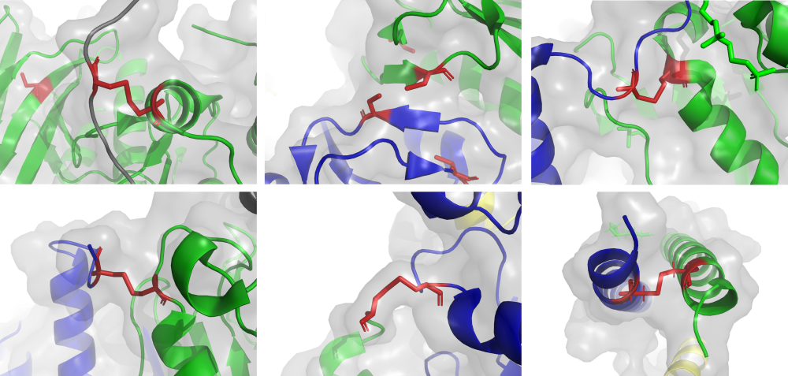

<div class = 'spacer'><div><head><link rel='icon'  type='image/png' href='icon.png'><link rel = 'stylesheet' href = 'style.css'><script src='https://3Dmol.org/build/3Dmol-min.js'></script><title>ReDisulphID</title></head><body><a href = 'list.html'><div class = 'title home'>ReDisulphID<div class='subtitle'><p>a tool for identifying redox-active intermolecular disulphides from structures</div></div></a><div class = 'main'><a href = 'list.html'><b><div class = 'item home' style='background:;'><p><p>Find redox-active intermolecular disulphides...</div><p></b></a><a href = 'about.html'><div class = 'item home about_button' style='background:;'><p><p>About</div><p></a><div class = 'citation home'>If this tool was useful for finding a disulphide, please cite:<p></div></div><script src='./search.js'></script></body>